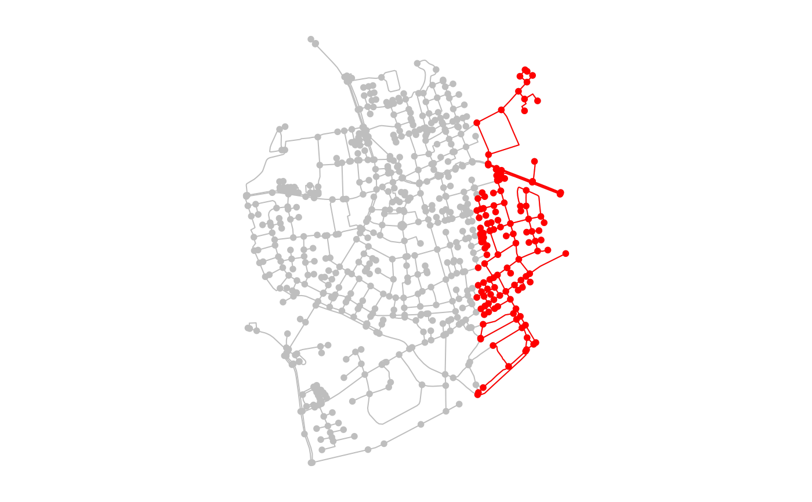

These functions allow to query specific coordinate values from the geometries of the nodes.
node_X() node_Y() node_Z() node_M()
A numeric vector of the same length as the number of nodes in the network.
Just as with all query functions in tidygraph, these functions
are meant to be called inside tidygraph verbs such as
mutate or filter, where
the network that is currently being worked on is known and thus not needed
as an argument to the function. If you want to use an algorithm outside of
the tidygraph framework you can use with_graph to
set the context temporarily while the algorithm is being evaluated.
If a requested coordinate value is not available for a node, NA
will be returned.
library(sf, quietly = TRUE) library(tidygraph, quietly = TRUE) # Create a network. net = as_sfnetwork(roxel) # Use query function in a filter call. filtered = net %>% activate("nodes") %>% filter(node_X() > 7.54) oldpar = par(no.readonly = TRUE) par(mar = c(1,1,1,1)) plot(net, col = "grey")par(oldpar) # Use query function in a mutate call. net %>% activate("nodes") %>% mutate(X = node_X(), Y = node_Y())#> # A sfnetwork with 701 nodes and 851 edges #> # #> # CRS: EPSG:4326 #> # #> # A directed multigraph with 14 components with spatially explicit edges #> # #> # Node Data: 701 x 3 (active) #> # Geometry type: POINT #> # Dimension: XY #> # Bounding box: xmin: 7.522622 ymin: 51.94151 xmax: 7.546705 ymax: 51.9612 #> geometry X Y #> <POINT [°]> <dbl> <dbl> #> 1 (7.533722 51.95556) 7.53 52.0 #> 2 (7.533461 51.95576) 7.53 52.0 #> 3 (7.532442 51.95422) 7.53 52.0 #> 4 (7.53209 51.95328) 7.53 52.0 #> 5 (7.532709 51.95209) 7.53 52.0 #> 6 (7.532869 51.95257) 7.53 52.0 #> # … with 695 more rows #> # #> # Edge Data: 851 x 5 #> # Geometry type: LINESTRING #> # Dimension: XY #> # Bounding box: xmin: 7.522594 ymin: 51.94151 xmax: 7.546705 ymax: 51.9612 #> from to name type geometry #> <int> <int> <chr> <fct> <LINESTRING [°]> #> 1 1 2 Havixbecker S… residen… (7.533722 51.95556, 7.533461 51.95576) #> 2 3 4 Pienersallee seconda… (7.532442 51.95422, 7.53236 51.95377, 7.5… #> 3 5 6 Schulte-Bernd… residen… (7.532709 51.95209, 7.532823 51.95239, 7.… #> # … with 848 more rows